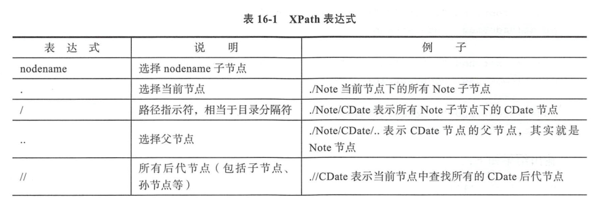

Contents
12.21. 解析XML文档¶
示例文件 Notes.xml
<?xml version="1.0" encoding="utf-8" ?>
<Notes>
<Note id="1">
<CDdate>2019-6-20</CDdate>
<Countent> 发布Python0</Countent>
<UserID>tony1</UserID>
</Note>
<Note id="2">
<CDdate>2019-6-21</CDdate>
<Countent> 发布Python1</Countent>
<UserID>tony2</UserID>
</Note>
<Note id="3">
<CDdate>2019-6-22</CDdate>
<Countent> 发布Python2</Countent>
<UserID>tony3</UserID>
</Note>
<Note id="4">
<CDdate>2019-6-23</CDdate>
<Countent> 发布Python3</Countent>
<UserID>tony4</UserID>
</Note>
<Note id="5">
<CDdate>2019-6-24</CDdate>
<Countent> 发布Python4</Countent>
<UserID>tony5</UserID>
</Note>
</Notes>
12.21.1. 读取XML文件¶
#!/usr/bin/env python
# -*- coding:utf8 -*-
# auther; 18793
# Date：2019/6/23 8:45
# filename: 1.读取xml文件.py
import xml.etree.ElementTree as ET
tree = ET.parse("Notes.xml") # 创建xml文档树
print(type(tree))
root = tree.getroot() # root是根元素
print(type(root))
print(root.tag)
for index, child in enumerate(root):
print("第{}个{}元素，属性{}".format(index, child.tag, child.attrib))
for i, child_child in enumerate(child):
print(" 标签：{}，内容：{}".format(child_child.tag, child_child.text))
输出信息:
<class 'xml.etree.ElementTree.ElementTree'>
<class 'xml.etree.ElementTree.Element'>
Notes
第0个Note元素，属性{'id': '1'}
标签：CDdate，内容：2019-6-20
标签：Countent，内容： 发布Python0
标签：UserID，内容：tony
第1个Note元素，属性{'id': '2'}
标签：CDdate，内容：2019-6-21
标签：Countent，内容： 发布Python1
标签：UserID，内容：tony2
第2个Note元素，属性{'id': '3'}
标签：CDdate，内容：2019-6-22
标签：Countent，内容： 发布Python2
标签：UserID，内容：tony3
第3个Note元素，属性{'id': '4'}
标签：CDdate，内容：2019-6-23
标签：Countent，内容： 发布Python3
标签：UserID，内容：tony4
第4个Note元素，属性{'id': '5'}
标签：CDdate，内容：2019-6-24
标签：Countent，内容： 发布Python4
标签：UserID，内容：tony5
12.21.2. 使用XPath¶
 
使用XPath 定位html文件或xml文件¶
#!/usr/bin/env python
#-*- coding:utf8 -*-
# auther; 18793
# Date：2019/6/23 8:54
# filename: 使用XPath寻找xml文件指定内容.py
import xml.etree.ElementTree as ET
tree = ET.parse("Notes.xml")
root = tree.getroot()
node = root.find("./Note") # 查找当前接电线的第一个Note子节点
print(node.tag, node.attrib)
node = root.find("./Note/CDate") # 查找Note子节点下的第一个CDdate节点
print(node.text)
node = root.find("./Note/CDate/..") # Note节点
print(node.tag, node.attrib)
node = root.find(".//CDate") # 当前节点查找所有后代节点中第一个CDate节点
print(node.text)
node = root.find("./Note[@id]") # 具有id属性的Note节点
print(node.tag, node.attrib)
node = root.find("./Note[@id='2']") # id属性等于'2'的Note节点
print(node.tag, node.attrib)
node = root.find("./Note[2]") # 第二个Note节点
print(node.tag, node.attrib)
node = root.find("./Note[last()]") # 最后一个Note节点
print(node.tag, node.attrib)
node = root.find("./Note[last()-2]") # 倒数第三个Note节点
print(node.tag, node.attrib)
输出内容：
Note {'id': '1'}
2019-6-20
Note {'id': '1'}
2019-6-20
Note {'id': '1'}
Note {'id': '2'}
Note {'id': '2'}
Note {'id': '5'}
Note {'id': '3'}
xpath用于数据爬取¶
#!/usr/bin/env python
#-*- coding:utf8 -*-
from lxml import etree
text = '''
<div>
<ul>
<li class="red"<h1>red flowers</h1></li>
<li class="yellow"<h1>yellow flowers</h2></li>
<li class="white"<h1>white flowers</h3></li>
<li class="black"<h1>black flowers</h4></li>
<li class="blue"<h1>blue flowers</h5></li>
</ul>
</div>
'''
html = etree.HTML(text)
result = etree.tostring(html)
print(result)
语法解析：
#!/usr/bin/env python
#-*- coding:utf8 -*-
'''
节点选择
表达式
nodename #选取此节点的所有子节点
/ #从根节点选取
// #从匹配当前节点选择文档中的节点，不考虑它们的位置
. #选取当前节点
.. #选取当前节点的父节点
@ #选取属性
'''
'''
谓语
路径表达式
/user_database/user[1] #选取属于user_database子元素的第一个user元素
//li[@attribute] #选取所有拥有名为attribute属性的li元素
//li[@attribute='red'] #选取所有li元素，且这些元素用于值为red的attribute属性
* #可以匹配任何元素节点
'''
"""
//*[@id="qiushi_tag_121402573"]/div[1]/a[2]/h2
"""
#获取单个用户的id
# import requests
# from lxml import etree
#
# headers = {
# "User-Agent": "Mozilla/5.0 (Windows NT 10.0; WOW64) AppleWebKit/537.36 "
# "(KHTML, like Gecko) Chrome/68.0.3440.84 Safari/537.36"
# }
# url = "https://www.qiushibaike.com/text/"
# res = requests.get(url, headers=headers)
# selector = etree.HTML(res.text)
# id = selector.xpath('//*[@id="qiushi_tag_121431185"]/div[1]/a[2]/h2/text()')
# # id = selector.xpath('//*[@id="qiushi_tag_121431185"]/div[1]/a[2]/h2/text()')[0]
# print(id)
#批量获取用户的id
'''
//div[@class="article block untagged mb15]'
div[1]/a[2]/h2 #用户id信息
#content-left
//*[@id="content-left"]
'''
import requests
from lxml import etree
headers = {
"User-Agent": "Mozilla/5.0 (Windows NT 10.0; WOW64) AppleWebKit/537.36 (KHTML, like Gecko) Chrome/68.0.3440.84 Safari/537.36"
}
url = "https://www.qiushibaike.com/text/"
res = requests.get(url,headers=headers)
selector = etree.HTML(res.text)
url_infos = selector.xpath('//div[@class="article block untagged mb15 typs_hot"]')
for url in url_infos:
id = url.xpath('div[1]/a[2]/h2/text()')[0]
print(id)
参考文献：